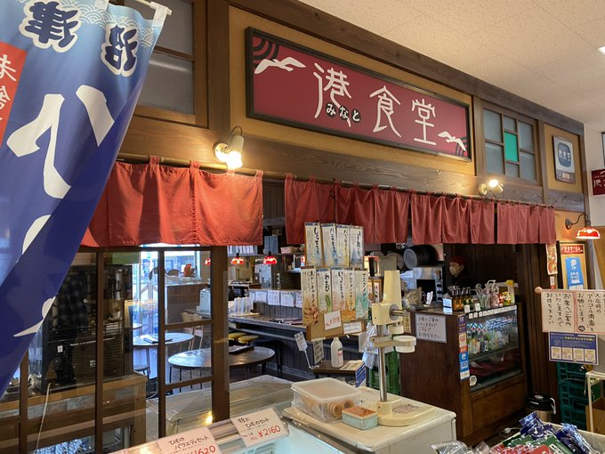
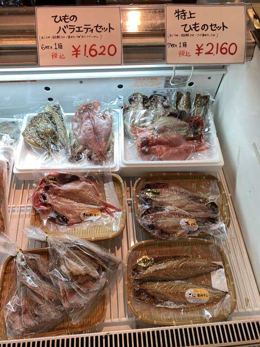
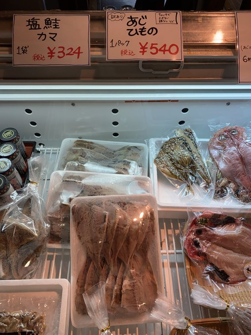

お取り寄せができるお店一覧
掲載している店舗の情報（写真を含む）は，Twitterなどで融資の方からご提供いただいたものです．
正式な情報は，店舗名からリンクしている各店舗の公式サイトの情報をご覧ください．
（更新日：2021/6/5）
丸勘 さん
■主な取り扱い商品：瀬付きあじ・赤ほっけ・のどぐろ・きんき・金目鯛・青のり・真いわし醤油干し・めひかり丸干し・駿河湾産釜揚げしらす・あじかまぼこなど
■注文方法：TEL・FAX・メールで注文が可能
[Twitter]丸勘本部のポンコツ☁POPゴリラ🦍（@minato_marukan）

さかなや千本一 さん
■主な取り扱い商品："そのまま五分で「ぬまづ丼ごはん」（２人前）＋おかずのセット。
おかずは、金目鯛煮付け・金目鯛の姿煮・地アジのフライ・ブリのカブト煮・ブリのあら煮・まぐろのカマ焼きなど
■注文方法：ネットで注文が可能
[Twitter]千本一 &かもめ丸 あつこママ（@atsuko_mama0702）


渡辺商店 さん
■主な取り扱い商品：冷凍えび・ほたて・カニ・釜揚げしらす・たらこ・明太子・いくら・麺類・お菓子・乾物・つくだ煮・つぼ漬け昆布・延命酢・ベーコン・チャーシューなど
■注文方法：電話・FAX・メール・Twitterにて注文が可能
[Twitter]渡辺商店（@himonoya3）
グランマ さん
■主な取り扱い商品：富士千本
■注文方法：ネットで注文が可能
[Twitter]グランマ🍰上土本店（@grandma_numazu）
沼津深海プリン工房 さん
■主な取り扱い商品：沼津プリン(プレーン・塩キャラメル・抹茶)・深海プリン・あさひプリン・深海の日プリンなど
■注文方法：ネットで注文が可能
[Twitter]沼津深海プリン工房（@numazupudding）
菓南 さん
■主な取り扱い商品：時期によるため、WEB要確認
■注文方法：電話・FAX・メールにて注文が可能
[Twitter]🍮菓南🍰（@kanan20010519）


港食堂 さん
■注文方法：電話・FAXにて注文が可能(工場へ注文)
  まぐろの魚栄 さん
■主な取り扱い商品：沼津港で唯一のまぐろの専門店の赤身・中トロ・大トロなど
■注文方法：電話・FAXにて注文が可能
[Twitter]まぐろの魚栄（@uoei_numazu）
マルニ茶業 さん
■主な取り扱い商品：深蒸し煎茶・くき煎茶・抹茶入玄米茶・ほうじ茶・玉露・ティーバッグ・粉茶など
■注文方法：ネットで注文が可能
武田丸 さん
■主な取り扱い商品：
■注文方法：電話・FAXにて注文が可能
[Twitter]武田丸（@takedamaru）
魚問屋 沼津丸十 さん
■注文方法：電話・FAXにて注文が可能
JAなんすんさん
■注文方法：ネット・FAXにて注文が可能
[Twitter]JAなんすん（@JA_nansun）
駿陽荘やま弥さん
■主な取り扱い商品：自家製の卵など
■注文方法：こちらを参照
[Twitter]駿陽荘やま弥🍊（@shunyosoyamaya）
雅心苑 リヴァージュ さん
■主な取り扱い商品：寿太郎蜜柑・寿太郎みかんマドレーヌ・まろんぱい・みしまコロッケ饅頭・夢みるく・駿河ほろりんなど
■注文方法：ネットにて注文が可能
[Twitter]🍊🐶 シュシュ🐶🍊（@choux_choux4981）
魚健 さん
■主な取り扱い商品：アジ・アナゴ・アワビ・カガミダイ(ギンマトウ)・本カマス・太刀魚・スズキ・金目鯛・アカハタ(アカギ)・ハマチ・カンパチ・活きシジミなど
■注文方法：ネットにて注文が可能
[Twitter](株)魚健 沼津港（@UOKEN12NUMAZU）
サスヨ 水産さん
■主な取り扱い商品：特上天然真あじ干物セット・ 特上お試し干物詰め合わせセット・特上こだわり干物詰め合わせセット・特上豪華版干物詰め合わせセットなど
■注文方法：ネットにて注文が可能
はなぱん さん
■主な取り扱い商品：フランスパン・食パンなど
■注文方法：ネットにて注文が可能
[Twitter]はなぱん（@HANAPANFAINAL）
つじ写真館 さん
■主な取り扱い商品：ラブライブ！サンシャイン!!コラボコーヒー
■注文方法：ネットにて注文が可能
[Twitter]つじ写真館（@tujiphotostudio）
松浦酒店 さん
■主な取り扱い商品：日本酒・焼酎・ワイン・リキュールなど
■注文方法：ネットとFAXにて注文が可能
[Twitter]松浦酒店（@matsuura_sakaya）
木村屋 さん
■主な取り扱い商品：卵焼き(幸玉・ねぎ玉・紅玉・磯玉)
■注文方法：ネット・電話・FAXにて注文が可能
内浦プロデュース さん
■主な取り扱い商品：松月さんのお菓子・安田屋旅館さんのお土産ボックス・エコバッグ・Tシャツなど
■注文方法：TEL・FAX・メールで注文が可能
バンデロールさん
■主な取り扱い商品：のっぽパン，バンデロールスイーツ，など
■注文方法：ネットにて注文が可能
[Twitter]株式会社バンデロール（@banderolejp）